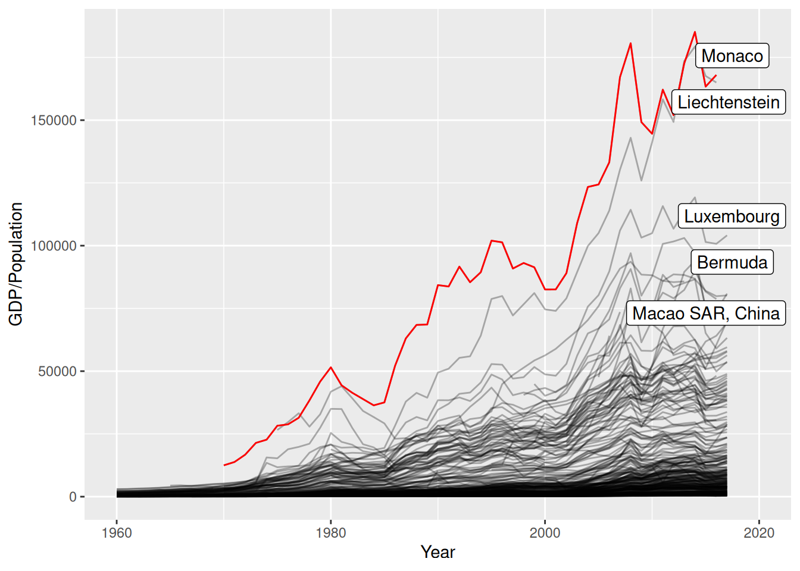
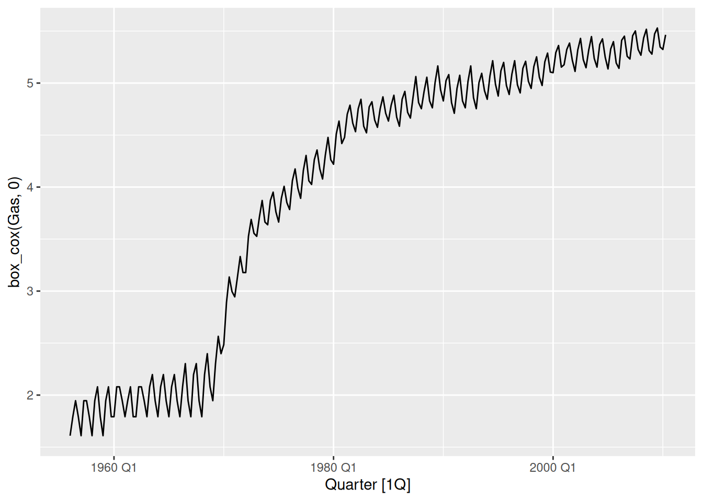
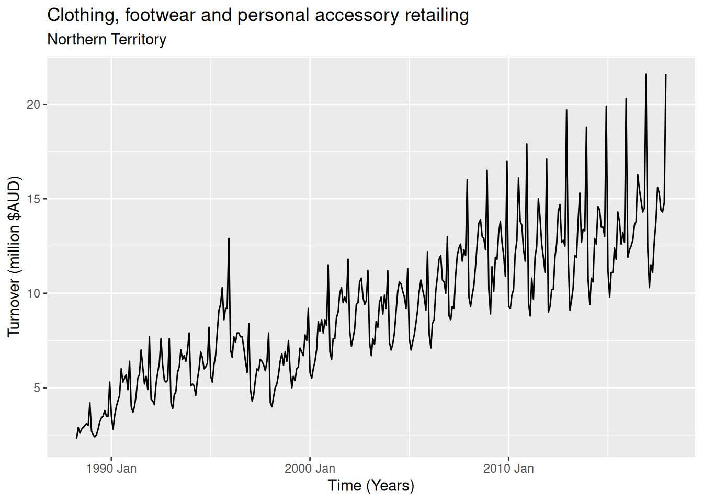
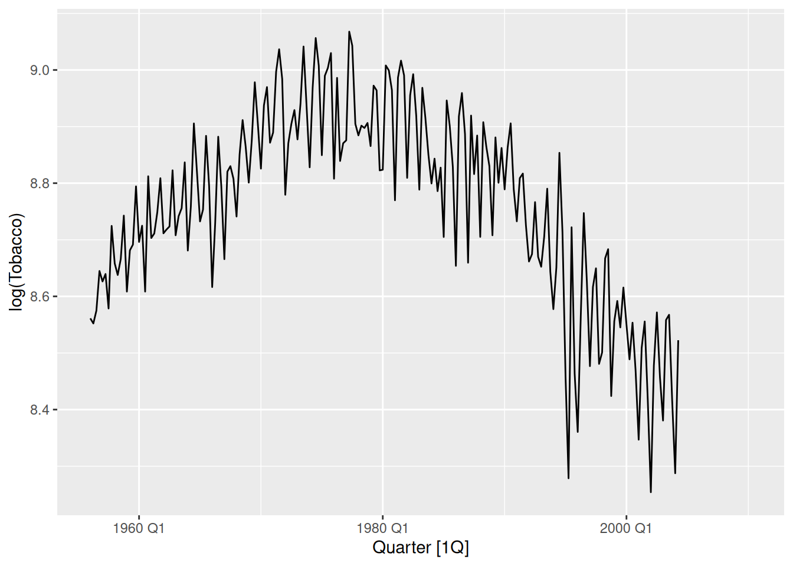
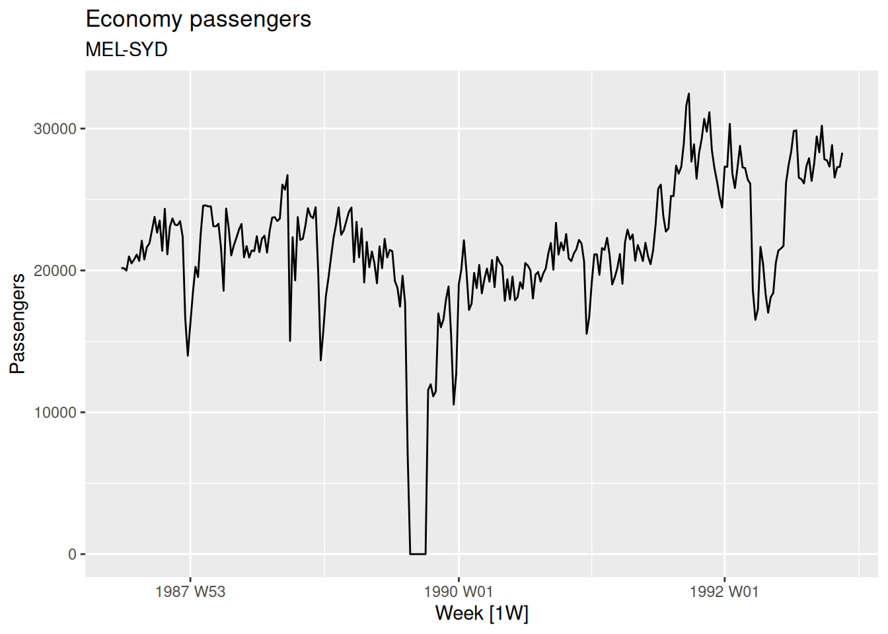
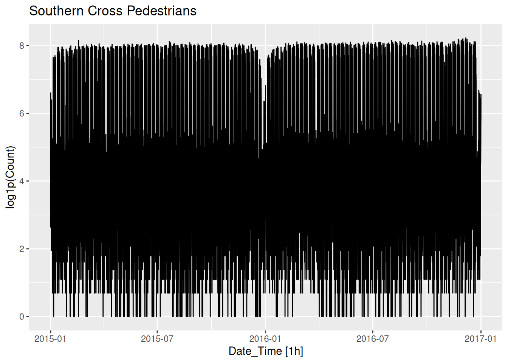

library(fpp3)Exercise Week 3: Solutions
fpp3 3.7, Ex 1
Consider the GDP information in
global_economy. Plot the GDP per capita for each country over time. Which country has the highest GDP per capita? How has this changed over time?
global_economy |>
autoplot(GDP / Population, alpha = 0.3) +
guides(colour = "none") # turn off the legend else hard to see as there are many seriesavg_gdp_pc <- global_economy |>
as_tibble() |>
group_by(Country) |>
summarise(
# Average GDP per capita for each country
gdp_pc = mean(GDP / Population, na.rm = TRUE),
# Most recent GDP per capita for each country
last = last((GDP / Population)[!is.na(GDP / Population)])
)
top_n(avg_gdp_pc, 5, gdp_pc)# A tibble: 5 × 3
Country gdp_pc last
<fct> <dbl> <dbl>
1 Cayman Islands 55868. 64103.
2 Channel Islands 50912. 73570.
3 Liechtenstein 68092. 164993.
4 Monaco 86474. 168011.
5 San Marino 59263. 48888.max_gdp_pc <- global_economy |>
semi_join(
avg_gdp_pc |>
filter(gdp_pc == max(gdp_pc, na.rm = TRUE)),
by = "Country"
)# install.packages("ggrepel")
# Using geom_label_repel() gives nicer label positions than geom_label()
# If the ggrepel package is not available, you can use geom_label() instead
library(ggrepel)
global_economy |>
ggplot(aes(x = Year, y = GDP / Population, group = Country)) +
geom_line(alpha = 0.3) +
geom_line(colour = "red", data = max_gdp_pc) +
geom_label_repel(
aes(label = Country, x = 2020, y = last),
data = top_n(avg_gdp_pc, 5, last),
)
global_economy |>
mutate(gdp_pc = GDP / Population) |>
as_tibble() |>
group_by(Year) |>
mutate(max_gdp_pc = max(gdp_pc, na.rm = TRUE)) |>
ungroup() |>
filter(
gdp_pc == max_gdp_pc,
Year >= 1970
) |>
arrange(Year)# A tibble: 48 × 11
Country Code Year GDP Growth CPI Imports Exports Population gdp_pc
<fct> <fct> <dbl> <dbl> <dbl> <dbl> <dbl> <dbl> <dbl> <dbl>
1 Monaco MCO 1970 2.93e 8 NA NA NA NA 23484 12480.
2 Monaco MCO 1971 3.28e 8 5.23 NA NA NA 23720 13813.
3 Monaco MCO 1972 4.02e 8 4.65 NA NA NA 24051 16734.
4 Monaco MCO 1973 5.24e 8 6.55 NA NA NA 24439 21423.
5 Monaco MCO 1974 5.64e 8 4.47 NA NA NA 24835 22707.
6 Monaco MCO 1975 7.12e 8 -0.973 NA NA NA 25197 28254.
7 United Ar… ARE 1976 1.92e10 16.5 NA NA NA 646943 29698.
8 United Ar… ARE 1977 2.49e10 21.4 NA NA NA 748117 33246.
9 Monaco MCO 1978 1.00e 9 3.95 NA NA NA 26087 38354.
10 Monaco MCO 1979 1.21e 9 3.53 NA NA NA 26395 45838.
# ℹ 38 more rows
# ℹ 1 more variable: max_gdp_pc <dbl>- Monaco currently has the highest GDP per capita, taking over from Liechtenstein.
- These two countries have had the highest GDP per capita for most of the last 50 years.
- The only years since 1970 where either Monaco or Liechtenstein did not have the highest GDP per capita were 1976 and 1977, when the United Arab Emirates just beat Monaco.
fpp3 3.7, Ex 2
For each of the following series, make a graph of the data. If transforming seems appropriate, do so and describe the effect.
- United States GDP from
global_economy- Slaughter of Victorian “Bulls, bullocks and steers” in
aus_livestock- Victorian Electricity Demand from
vic_elec.- Gas production from
aus_production
United States GDP
us_economy <- global_economy |>
filter(Country == "United States")
us_economy |>
autoplot(GDP)
- Trend appears exponential, a transformation would be useful.
us_economy |>
autoplot(box_cox(GDP, 0))- A log transformation (Box-Cox with \lambda = 0) appears slightly too strong.
us_economy |>
autoplot(box_cox(GDP, 0.3))
- Using \lambda = 0.3 looks pretty good, the trend is now almost linear.
Let’s see what guerrero’s method suggests.
us_economy |>
features(GDP, features = guerrero)# A tibble: 1 × 2
Country lambda_guerrero
<fct> <dbl>
1 United States 0.282Pretty close to \lambda = 0.3, let’s see how it looks:
us_economy |>
autoplot(box_cox(GDP, 0.2819714))- More or less the same. Box-Cox transformations are usually insensitive to the choice of \lambda.
Slaughter of Victorian “Bulls, bullocks and steers”
vic_bulls <- aus_livestock |>
filter(State == "Victoria", Animal == "Bulls, bullocks and steers")
vic_bulls |>
autoplot(Count)- Variation in the series appears to vary slightly with the number of bulls slaughtered in Victoria.
- A transformation may be useful.
vic_bulls |>
autoplot(log(Count))- A log transformation (Box-Cox \lambda = 0) appears to normalise most of the variation. Let’s check with guerrero’s method.
vic_bulls |>
features(Count, features = guerrero)# A tibble: 1 × 3
Animal State lambda_guerrero
<fct> <fct> <dbl>
1 Bulls, bullocks and steers Victoria -0.0446- Pretty close, guerrero suggests \lambda = -0.045. This is close enough to zero, so it is probably best to just use a log transformation (allowing better interpretations).
Victorian Electricity Demand
vic_elec |>
autoplot(Demand)Seasonal patterns for time of day hidden due to density of ink.
Day-of-week seasonality just visible.
Time-of-year seasonality is clear with increasing variance in winter and high skewness in summer.
vic_elec |>
autoplot(box_cox(Demand, 0))A log transformation makes the variance more even and reduces the skewness.
Guerrero’s method doesn’t work here as there are several types of seasonality.
Australian Gas production
aus_production |>
autoplot(Gas)
- Variation in seasonal pattern grows proportionally to the amount of gas produced in Australia. A transformation should work well here.
aus_production |>
autoplot(box_cox(Gas, 0))
- A log transformation appears slightly too strong, where the variation in periods with smaller gas production is now larger than the variation during greater gas production.
aus_production |>
features(Gas, features = guerrero)# A tibble: 1 × 1
lambda_guerrero
<dbl>
1 0.110- Guerrero’s method agrees by selecting a slightly weaker transformation. Let’s see how it looks.
aus_production |>
autoplot(box_cox(Gas, 0.1095))Looking good! The variation is now constant across the series.
fpp3 3.7, Ex 3
Why is a Box-Cox transformation unhelpful for the
canadian_gasdata?
canadian_gas |>
autoplot(Volume) +
labs(
x = "Year", y = "Gas production (billion cubic meters)",
title = "Monthly Canadian gas production"
)Here the variation in the series is not proportional to the amount of gas production in Canada.
When small and large amounts of gas is being produced, we can observe small variation in the seasonal pattern.
However, between 1975 and 1990 the gas production is moderate, and the variation is large.
Power transformations (like the Box-Cox transformation) require the variability of the series to vary proportionately to the level of the series.
fpp3 3.7, Ex 4
What Box-Cox transformation would you select for your retail data (from Exercise 8 in Section 2.10)?
set.seed(12345678)
myseries <- aus_retail |>
filter(
`Series ID` == sample(aus_retail$`Series ID`, 1),
Month < yearmonth("2018 Jan")
)
myseries |>
autoplot(Turnover) +
labs(
y = "Turnover (million $AUD)", x = "Time (Years)",
title = myseries$Industry[1],
subtitle = myseries$State[1]
)
The variation appears proportional to the level of the series, so a Box-Cox transformation may be useful.
myseries |>
autoplot(box_cox(Turnover, 0)) +
labs(
title = myseries$Industry[1],
subtitle = myseries$State[1]
)A log transformation (Box-Cox \lambda = 0) appears about right here.
Let’s check what the Guerrero method would suggest.
myseries |>
features(Turnover, features = guerrero)# A tibble: 1 × 3
State Industry lambda_guerrero
<chr> <chr> <dbl>
1 Northern Territory Clothing, footwear and personal accessory … 0.0776This is close to zero, so it supports our choice above.
Note: your series may be different and require a different transformation than what I have used here.
fpp3 3.7, Ex 5
For the following series, find an appropriate Box-Cox transformation in order to stabilise the variance. Tobacco from
aus_production, Economy class passengers between Melbourne and Sydney fromansett, and Pedestrian counts at Southern Cross Station frompedestrian.
Australian tobacco production
aus_production |>
autoplot(Tobacco)- This variation in this series appears to be mostly constant across different levels of the series.
- If any transformation is required, it would be a weak one. This can be seen if a strong transformation (such as log) is used.
aus_production |>
autoplot(log(Tobacco))
- Guerrero’s method suggests that \lambda = 0.926 is appropriate. This is a very weak transformation, as it is close to 1 (probably best to not bother transforming this series).
aus_production |>
features(Tobacco, features = guerrero)# A tibble: 1 × 1
lambda_guerrero
<dbl>
1 0.926aus_production |>
autoplot(box_cox(Tobacco, 0.926))- This series appears very similar to the original. The transformation is having almost no effect.
Economy passengers between Melbourne and Sydney
ansett |>
filter(Airports == "MEL-SYD", Class == "Economy") |>
autoplot(Passengers) +
labs(title = "Economy passengers", subtitle = "MEL-SYD")
The data does not appear to vary proportionally to the level of the series.
There are many periods in this time series (such as the strike and change in seat classes) that may need further attention, but this is probably better resolved with modelling rather than transformations.
Pedestrian counts
pedestrian |>
filter(Sensor == "Southern Cross Station") |>
autoplot(Count) +
labs(title = "Southern Cross Pedestrians")- There is a high skewness and some zeros (so we can’t take logs). Let’s try the
log(x+1)transformation:
pedestrian |>
filter(Sensor == "Southern Cross Station") |>
autoplot(log1p(Count)) +
labs(title = "Southern Cross Pedestrians")
That’s roughly balanced the two tails.
fpp3 3.7, Ex 9
Figures 3.16 and 3.17 show the result of decomposing the number of persons in the civilian labour force in Australia each month from February 1978 to August 1995.
- Write about 3–5 sentences describing the results of the decomposition. Pay particular attention to the scales of the graphs in making your interpretation.
- The Australian labour force has been decomposed into 3 components (trend, seasonality, and remainder) using an STL decomposition.
- The trend element has been captured well by the decomposition, as it smoothly increases with a similar pattern to the data. The trend is of the same scale as the data (indicated by similarly sized grey bars), and contributes most to the decomposition (having the smallest scale bar).
- The seasonal component changes slowly throughout the series, with the second seasonal peak diminishing as time goes on – this component is the smallest contribution original data (having the largest scale bar).
- The remainder is well-behaved until 1991/1992 when there is a sharp drop. There also appears to be a smaller drop in 1993/1994. There is sometimes some leakage of the trend into the remainder component when the trend window is too large. This appears to have happened here. It would be better if the recession of 1991-1992, and the smaller dip in 1993, were both included in the trend estimate rather than the remainder estimate. This would require a smaller trend window than what was used.
- In the bottom graph, the seasonal component is shown using a sub-series plot. December is the highest employment month, followed by March and September. The seasonal component changes mostly in March (with a decrease in the most recent years). July and August are the months with the next largest changes. The least changing is June with the rest are somewhere between these. December and September show increases in the most recent years.
- Is the recession of 1991/1992 visible in the estimated components?
Yes. The remainder shows a substantial drop during 1991 and 1992 coinciding with the recession.
fpp3 3.7, Ex 10
This exercise uses the
canadian_gasdata (monthly Canadian gas production in billions of cubic metres, January 1960 – February 2005).
- Plot the data using
autoplot(),gg_subseries()andgg_season()to look at the effect of the changing seasonality over time. What do you think is causing it to change so much?
canadian_gas |> autoplot(Volume)canadian_gas |> gg_subseries(Volume)canadian_gas |> gg_season(Volume)- The changes in seasonality are possibly due to changes in the regulation of gas prices.
- Do an STL decomposition of the data. You will need to choose a seasonal window to allow for the changing shape of the seasonal component.
fit <- canadian_gas |>
model(STL(Volume)) |>
components()
fit# A dable: 542 x 7 [1M]
# Key: .model [1]
# : Volume = trend + season_year + remainder
.model Month Volume trend season_year remainder season_adjust
<chr> <mth> <dbl> <dbl> <dbl> <dbl> <dbl>
1 STL(Volume) 1960 Jan 1.43 1.08 0.520 -0.172 0.911
2 STL(Volume) 1960 Feb 1.31 1.11 0.215 -0.0178 1.09
3 STL(Volume) 1960 Mar 1.40 1.13 0.307 -0.0395 1.09
4 STL(Volume) 1960 Apr 1.17 1.16 0.0161 -0.00627 1.15
5 STL(Volume) 1960 May 1.12 1.18 -0.116 0.0476 1.23
6 STL(Volume) 1960 Jun 1.01 1.21 -0.356 0.159 1.37
7 STL(Volume) 1960 Jul 0.966 1.23 -0.403 0.136 1.37
8 STL(Volume) 1960 Aug 0.977 1.26 -0.349 0.0677 1.33
9 STL(Volume) 1960 Sep 1.03 1.28 -0.340 0.0870 1.37
10 STL(Volume) 1960 Oct 1.25 1.31 -0.0899 0.0329 1.34
# ℹ 532 more rowsnames(fit)[1] ".model" "Month" "Volume" "trend"
[5] "season_year" "remainder" "season_adjust"fit |> autoplot()
- How does the seasonal shape change over time? [Hint: Try plotting the seasonal component using
gg_season().]
fit |> gg_season(season_year)- Here the changes are easier to see. Up to about 1990 there is strong seasonality with the greatest volume in the Canadian winter.
- The seasonality increases in size over time. After 1990 the seasonality changes shape and appears to be driven partly by the month length near the end of the series.
- Can you produce a plausible seasonally adjusted series?
canadian_gas |>
autoplot(Volume) +
autolayer(fit, season_adjust, col = "blue")
- Compare the results with those obtained using SEATS and X11. How are they different?
# remember to load library(seasonal) before attempting this question!
canadian_gas |>
model(X_13ARIMA_SEATS(Volume ~ seats())) |>
components() |>
autoplot()canadian_gas |>
model(X_13ARIMA_SEATS(Volume ~ x11())) |>
components() |>
autoplot()Note that SEATS fits a multiplicative decomposition by default, so it is hard to directly compare the results with the other two methods.
The X11 seasonal component is quite similar to the STL seasonal component. Both SEATS and X11 have estimated a more wiggly trend line than STL.